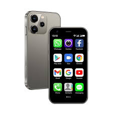
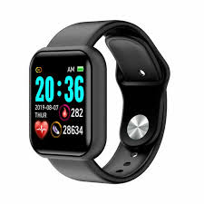

We diagnose gadgets, software suites, and complex technical infrastructures under real lab pressures and live conditions. No marketing smoke and mirrors—just unadulterated, data-driven analytical matrix insights.


In the contemporary digital ecosystem, finding objective, granular product assessments has become exceedingly difficult. Most online review networks operate on superficial analysis, repeating manufacturer press releases rather than subjecting consumer assets to strict physical evaluation. At ranking-hours.uz, we have established an elite, sovereign testing infrastructure designed to clear away corporate marketing spin. Our fundamental objective is simple yet highly rigorous: to provide tech enthusiasts, software developers, and everyday consumers with empirical data that cuts through commercial biases.
Our deep tahlil mechanisms reject traditional, surface-level testing models. When a new hardware flagship, an updated software build, or an electric vehicle hits the commercial market, our internal diagnostic division takes over. We track device telemetry over prolonged lifecycles, measuring processing degradation curves, battery efficiency drops under thermal limits, and physical build weaknesses. This deep concentration on raw, measurable engineering facts guarantees that every single chart, ranking index, and multi-point product matrix hosted on ranking-hours.uz reflects reality, not corporate public relations campaigns.
Maintaining this degree of technical depth demands significant institutional discipline. Our internal engineers operate entirely behind a commercial firewall, meaning they have absolutely no knowledge of platform advertising structures, affiliate networks, or corporate monetization policies. By completely isolating our data collection processes from business considerations, we preserve an uncompromised editorial stance. We do not accept curated corporate review samples that have been hand-picked or optimized by PR firms. Instead, we acquire all consumer assets anonymously from retail marketplaces to replicate the exact experience of a standard retail buyer.
Furthermore, our evaluation processes are built to evolve alongside modern software systems. We recognize that today's hardware is inherently dependent on firmware iterations. A smartphone, an automated automobile, or a creative software suite can experience massive changes in system stability, security, and processing speeds following a single patch. To account for this fluid ecosystem, the engineering specialists at ranking-hours.uz continually re-evaluate previously graded products. This perpetual loop of testing ensures our indexes remain accurate over multiple years, saving you valuable time and preventing expensive buying mistakes.
Discover the architectural pillars that keep our tracking platform entirely honest, reliable, and scientifically objective.
We completely reject biased corporate promotional sheets. Our engineers source tech assets anonymously directly from consumer retailers to evaluate long-term load behaviors. Every device undergoes extensive stress cycles designed to reveal real-world manufacturing flaws and software limitations before they affect your workflow.
We strip down complex architectures, intricate specs, and difficult engineering principles into functional breakdowns highlighting everyday utility and design vulnerabilities. We communicate dense data through simplified matrices, translating system bottlenecks into understandable buyer insights.
Every dynamic matrix candidate faces strict testing across core parameters: firmware stability metrics, price-to-performance equilibrium, construction stress tolerance, and ecosystem convenience. Our scoring tiers are mathematically weighted to eliminate personal evaluator bias entirely.
The tech landscape shifts rapidly. We continuously refine, modify, and update our comparison structures as fresh firmware iterations, system bugs, and device revisions drop. If an outstanding product receives a broken software update, its position within our rank index drops immediately.
To fully grasp the scope of our research, it is essential to look at how we approach different tech sectors. In our Consumer Tech Hub, for example, evaluating high-end mobile smartphones goes far beyond checking camera megapixels or running generic benchmarking software. Our team uses precision lux meters to test display contrast ratios under blazing direct sunlight, thermal imaging gear to map processor hot spots during intense gaming sessions, and automated robotic systems to simulate everyday apps for highly accurate battery drain data. We don't just state that a battery has a certain capacity; we show exactly how that capacity behaves under specific, heavy computing loads.
When it comes to our Enterprise and Creative Software Hubs, our evaluation strategies shift toward tracking architectural reliability. We test tools like professional video editors, advanced ideation software, and large cloud-management systems by putting them through high-pressure, simulated industry environments. We measure RAM usage spikes during complex rendering tasks, check system stability when handling corrupted data formats, and look closely at how well a program integrates into existing cloud networks. This level of technical testing allows ranking-hours.uz to serve as an indispensable tool for independent creators, backend developers, and corporate tech buyers alike.
Finally, our Automotive and E-Mobility Division tackles the massive challenges of evaluating modern electric vehicles and smart transportation tech. We monitor real-world battery degradation across fluctuating seasonal temperatures, evaluate how driver-assist systems respond to sudden road obstructions, and test charging speeds on different electrical grids. This exhaustive, data-heavy research ensures our readers can confidently invest in clean transit options without falling for overhyped corporate marketing claims. We lay bare the factual realities of modern tech so you can build a more efficient digital lifestyle.
Navigate through our dedicated testing fields to discover pristine data arrays and performance metrics.
In-depth evaluations covering cutting-edge flagship platforms, battery lifecycle stress thresholds, camera optical degradation, and real-world system processor limits.
Comprehensive studies tracking premium business ultrabooks, computational platforms engineered for development, and raw internal performance metrics under sustained workloads.
Unbiased reporting monitoring modern electric vehicles, accurate drive range degradation, battery management architecture benchmarks, and autopilot collision responses.
Objective metrics comparing enterprise production programs, artificial intelligence suites, automation nodes, and database environments for elite specialists.